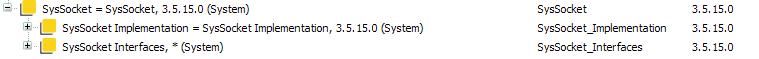
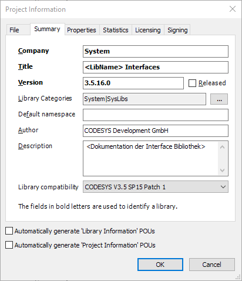

Extend the Runtime System Component with an optional component¶
Introduction¶
Optional external libraries serve to make optional runtime system components available in IEC. Optional means here that a component cannot be integrated in any runtime system because of resource or system restrictions. So optional components and their corresponding libraries are not available in all runtime systems.
To make a library in CODESYS optional, it is necessary to separate data types, interfaces, constants, etc. from the actual implementation. This separation is necessary because it is not possible to use a conditional compilation in the declaration part of CODESYS. By splitting the implementation and the data types, it is possible that the data types are used in the declaration part, but are conditionally translated against the external interface in the implementation part. This enables the IEC programmer (library developer) to react to optional external interfaces.
The following example illustrates the use of an optional interface.
{IF defined (pou:EventOpen)}
EventOpen();
{END_IF}
Structure of an optional external interface¶
The structure of an optional external interface is essentially always the same. However, the structure differs in detail depending on whether a new runtime component is developed or whether an existing external interface is converted to optional. This has to do with the existing placeholders in the device description and compatibility. The first step describes the basic structure. In the following chapters, you will find instructions on how to convert a new optional external interface and how to convert an existing external interface to optional. The aim of both procedures is that the external interface is represented in CODESYS as follows:
Container library <name>.library: This library combines the interface library and the implementation library for the user. The user only has to include this one library in his project / library. Two further libraries are then integrated in this container:
Interface Library <Name>_Itfs.library
Contains all public declarations (constants, structures, enums, unions, IEC interfaces, etc.)
Implementation Library <Name>_Impl.library
Contains the implementation (typically the external functions or FBs) This library is always referenced by placeholders. If the implementation is not available on the PLC, this library is resolved to NotImplementedByDevice
Now the container library can be included in IEC and the interface library is always available for the declaration part of the project. In the implementation part you can now compile conditionally against the implementation library and the code is removed at compile time if the implementation is not available and this library is resolved to NotImplementedByDevice.
Creation of a new external interface¶
Note
The procedure described here does not create a placeholder for the container library. This is the correct procedure for new external interfaces. The procedure is not suitable for converting existing libraries.
Step 1: Create Interface Library¶
1.1 Create the library over the whole normal template. Name <ComponentName>_Itfs.library
1.2 Fill the interface library with all required types etc.
1.3 In Libman add other needed interface libraries. In an interface library only other interface libraries can be added.
1.4 Set the following settings in the Project Information:
 The following properties must be filled here:
Key
Value
Type
Company
System
Text
Title
<ComponentName> Interface
Text
Version
Current development version
Text
LibraryCategories
System|SysLibs
Text
Description
Insert the documentation here. Tip: Edit in an external text editor and then insert
Text
IsInterfaceLibrary
Must be set to True
Boolean
DocFormat
reStructuredText format, if documentation is realized in rst
Text
1.5 Install library
1.6 Add library to your sourcecode management system
1.7 Perform an M4 export of the library into the component interface of the runtime component
Step 2: Create implementation library¶
2.1 Create the library using the appropriate template. Name <ComponentName>_Impl.library
2.2 Add the external or other implementation
2.3 Set the following settings in the Project Information:
The following properties must be filled here:
Key
Value
Type
Company
System
Text
Title
<ComponentName> Implementation
Text
Version
Current development version
Text
LibraryCategories
System|SysLibs
Text
Description
Insert the documentation here. Tip: Edit in an external text editor and then insert
Text
Placeholder
The placeholder for the library must be set here. For the implementation <ComponentName> Implementation is used
Text
DefaultNamespace
This is usually empty for external interfaces
Text
DocFormat
reStructuredText format, if documentation is realized in rst
Text
2.4 Add the interface library and other required libraries to LibMan
2.5 Install the library.
2.6 Add library to your sourcecode management system
2.7 Perform an M4 export of the library to a new runtime interface named <ComponentName>_ImplementationItf.m4
Step 3: Create container library¶
3.1 Create the library using the appropriate template. Name <ComponentName>.library
- 3.2 Add the two previously created libraries to the Libman. Make sure that the <ComponentName> implementation is inserted by placeholder.
This is the case when the library is inserted as follows : <Placeholder> = <ComponentName> Implementation
3.3 In the libman for both inserted libraries set that the symbols should be available directly in the container library.
3.4 Set the following settings in the Project Information:
Company: System
Title: <ComponentName>
Version: Current development version
LibraryCategories: System|SysLibs
Description: Insert the documentation here. Tip: Edit in an external text editor and then insert.
3.5 Install the library.
3.6 Add library to your sourcecode management system
Step 4: Update placeholders for the device description¶
- 4.1 In the Placeholder.xml set the default resolution
of the library to NotImplementedByDevice, 3.5.15.0 (System). This is an empty library. It is always used in exactly this version. The idea behind this is that in the libman you can see why the library is not resolved to the implementation. Therefore we have chosen the name NotImplementedByDevice:
<?xml version="1.0" encoding="UTF-8"?> <Placeholders xmlns="http://www.3s-software.com/schemas/Placeholders-0.1.xsd" version="3.5.16.0" xmlns:ts="http://www.3s-software.com/schemas/TargetSettings-0.1.xsd"> <ts:section name="library-management"> <ts:section name="placeholder-libraries"> ... <!-- ********************************* optional Runtime components **********************************************--> ... <ts:setting name="MyExternalExample Implementation" type="string" access="visible"> <ts:value>NotImplementedByDevice, 3.5.15.0 (System)</ts:value> </ts:setting> </ts:section> </ts:section> </Placeholders>4.2 In the OptionalRuntimeLibraries.xml set the correct resolution of the library to <ComponentName> Implementation
<?xml version="1.0" encoding="UTF-8"?> <Placeholders xmlns="http://www.3s-software.com/schemas/Placeholders-0.1.xsd" version="3.5.15.0" xmlns:ts="http://www.3s-software.com/schemas/TargetSettings-0.1.xsd"> <!-- This file contains only completely optional external libraries. These libraries MUST NOT contain any types. If the library contains types split it up into an interface and implementation library. These two libraries are combined into a container library. --> <ts:section name="library-management"> <ts:section name="placeholder-libraries"> <!-- ********************************************** 3S Placeholder ***************************************************** --> ... <ts:setting name="MyExternalExample Implementation" type="string" access="visible"> <ts:value>CmpCharDevice Implementation, 3.5.15.10 (3S - Smart Software Solutions GmbH)</ts:value> </ts:setting> </ts:section> </ts:section> </Placeholders>4.3 Two macros are exported with the m4 export of the external implementation library:
SET_INTERFACE_NAME(`<ComponentName>_Implementation') SET_PLACEHOLDER_NAME(`<ComponentName> Implementation')These are used by the Delivery Manager to create the placeholder list in the device description: NotImplementedByDevice -> <ComponentName> Implementation
Note
If a CODESYS version < 3.5.16.0 is used to export the m4 files, the two above defines must be inserted manually into the <ComponentName>_ImplementationItf.m4 file!
Step 5: Changes to the runtime component¶
5.1 There is now a new <ComponentName>_ImplementationItf.m4 for the external interface This must be compiled with the M4 compiler.
5.2 In Dependency-M4 of the component <ComponentName>Dep.m4, this new interface must also be implemented to make the external interface available.
5.3 Implement the external interface in the runtime component.
Conversion of an existing external interface into an optional external interface¶
Note
If an existing external library is converted into an optional external interface, it is necessary to use the old placeholder for the “Container Library”. If this is not the case, the compatibility between a converted library and the old unmodified library is not guaranteed. Therefore, different steps are necessary in this case.
Step 1: Create Interface Library¶
The same steps are necessary as for a new external interface. In step 2, the data types Interfaces and so on are moved from the existing external library to this new library.
Step 2: Create implementation library¶
The same steps are required as for a new external interface. In step 2 the external interfaces, FBs or programs are moved from the existing external library to this new library.
Step 3: Create container library¶
3.1 Open the existing external library <ComponentName>.library
3.2 After the other two libraries are created, the existing external library should be essentially empty. If this is not the case, parts still have to be moved to one of the other two libraries.
3.3 Delete all libraries in Libman.
3.4 Add the two newly created libraries in the Libman. Again, make sure that the <ComponentName> implementation is inserted using placeholders. Also check the box as for the real container lib. See step 3 for the new container library.
3.5 Insert a new attribute in the project settings
IsCommonLibraryContainer: True. This attribute causes this library to receive the same checks as a real container library. This ensures that the library is used correctly.
3.6 Install the modified library
3.7 Commit the changed library in your sourcecode management system
Step 4: Updating the device description and the runtime component¶
These steps correspond to the steps for a new external interface. However, you must ensure that the old placeholder is retained.
Final check¶
To see if everything worked correctly, the following things must be installed in CODESYS:
All new libraries
The newly generated device description
These screenshots have been made with existing libraries.
Behavior with new external interfaces¶
These two libraries were initially implemented as optional external interfaces.
CmpOPCUAClient not available on the runtime
CmpOPCUAStack available on the Runtime
Note
Pay attention to the following things:
The container library is not resolved using a placeholder
The interface library is always used in the latest version *(System)
The implementation library is resolved in the correct version or as NotImplementedByDevice
Behavior when converting an existing library¶
The behaviour is illustrated here using SysSocket
Library before reconstruction:
Library after reconstruction:
Note
Pay attention to the following things:
The container library is expanded using a placeholder
The interface library is always used in the latest version *(System)
The implementation library is resolved in the correct version or as NotImplementedByDevice
When updating a Device to the old version, these libraries disappear and the old non-divided library is attracted again